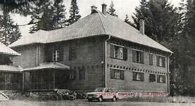
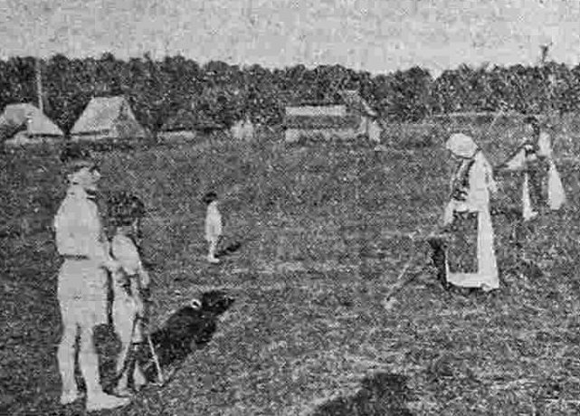

Почетком августа мјесеца на Хан Пијеску се одржава музичко – спортски – камперски фестивал.
Мјесто дешавања је излетиште Комница, око 4 км од Хан Пијеска.Циљ Камп Феста јесте да постане забавна регионална манифестација, по узору на неке наше домаће а и свјетски познате фестивале.
На простору општине Хан Пијесак, у селу Мало Поље, налази се Планински камп "Јазавчије рупе".
Званично отварање зимске сезоне на простору кампа је 07.01.2017. године. Од тога дана ће у функцији бити три ски лифта којима домаћини располажу а двије стазе (дужине 300 и 150 метара) спремно ће дочекати посјетиоце. Цијена дневне карте за ски лифтове је 5 КМ.
Резиденција краља Александра Карађорђевића у Хан Пијеску налази се у Хан Пијеску и представља једину краљевску резиденцију у Босни и Херцеговини.
Саграђена је 1921. године, за потребе краља Александра Карађорђевића.
Дворац је у Другом свјетском рату дјелом оштећен, после рата служио је као резиденција државних службеника.
Изгорио је у пожару 2005. године. Води се као национални споменик Босне и Херцеговине.
 Градња дворца је почела 1919. године, а саграђен је 24 мјесеца касније, док је градња цјелог краљевог комплекса завршена је 1924. године.
Управа двора је од Грађевинске дирекције Сарајево 23. октобра 1924. године под бројем 10622 добила докуменат и констатовала довршење државних зграда у Хан Пијеску
које ће служити за краљеве потребе.
Саграђена је 1923. године и црква којој је кумова Александар лично. Постоје извори по којима је овдје потписан и Видовдански Устав.
У току Одбрамбено-отаџбинског рата, дворац користила Војска Републике Српске.
Од 2004. године пренијет је у власништво општине, али нису изнађена средства за његову обнову, одржавање и стављање у функцију. У љето 2005. године дворац је изгорио.